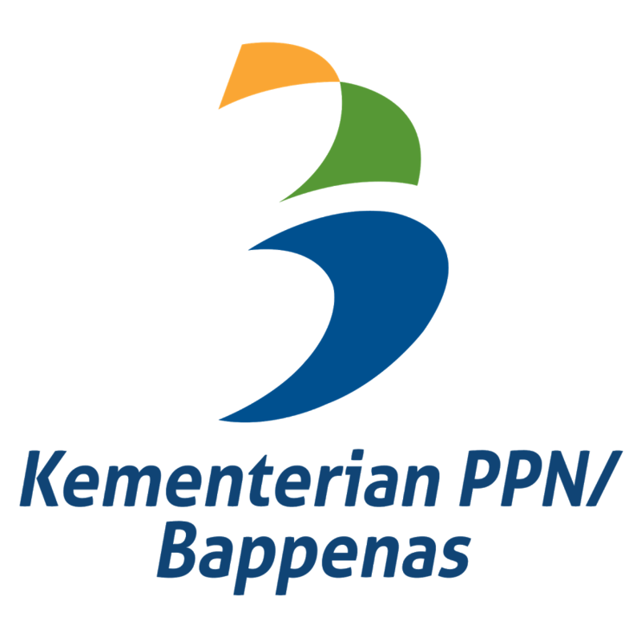
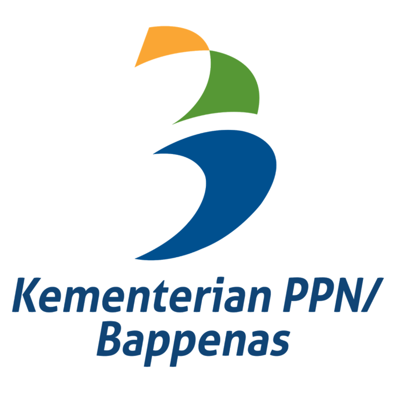

Prinsip Pelaksaan SDGs
Dalam pelaksanaannya, Indonesia memegang teguh prinsip-prinsip SDGs, yaitu
prinsip pembangunan universal, integrasi, dan tidak ada yang tertinggal.

Universal
Dilaksanakan oleh dunia dengan tujuan dan sasaran yang transformatif pada manusia, komprehensif, dan berjangka panjang
Integration
Dilaksanakan secara terintegreasi pada semua dimensi sosial, ekonomi dan lingkungan (saling terkait)

No One Left Behind
Dilaksanakan dengan melibatkan semua pemangku kepentingan serta memberi manfaat bagi semua terutama yang rentan
PERSENAN DATA TARGET PERKEMBANGAN
Berikut adalah data target perkembangan per-target pilar Sosialcare.
PENCAPAIAN SOSIALCARE
Beberapa pencapaian dari UN (United Nations) dalam mencapai Pilar Sosialcare
Targets
Events
Publications
Actions
Berita Mengenai SDGs
- All
- Healthcare
- Education
- Social Care

Healthcare
Berita Heatlthcare 1
{kind=link}
Education
Berita Education 3
{kind=link}
Healthcare
Berita Healthcare 2

Social Care
Berita Social Care 2

Education
Berita Education 2

Healthcare
Berita Healthcare 3
{kind=link}
Social Care
Berita Social Care 1
{kind=link}
Social Care
Berita Social Care 3
{kind=link}
Education
Berita Education 1
Association With
 



Apa Kata Mereka

Suharso Monoarfa
Menteri Perencanaan Pembangunan Nasional dan Kepala Badan Perencanaan Pembangunan Nasional di Kabinet Indonesia Maju
 Indonesia menjadi salah satu pionir dan teladan dalam pelakasanaan SDGs di tingkat global.
Indonesia menjadi salah satu pionir dan teladan dalam pelakasanaan SDGs di tingkat global.


Nadiem Makarim
Menteri Pendidikan, Kebudayaan, Riset, dan Teknologi Indonesia
 Terima kasih untuk lebih dari 1,2 juta pendidik sudah mengakses dan saling berbagi materi di platform Merdeka Mengajar, sebuah kanal bagi guru-guru untuk belajar, untuk mengajar, dan untuk berkarya serta mendukung implementasi Kurikulum Merdeka.
Terima kasih untuk lebih dari 1,2 juta pendidik sudah mengakses dan saling berbagi materi di platform Merdeka Mengajar, sebuah kanal bagi guru-guru untuk belajar, untuk mengajar, dan untuk berkarya serta mendukung implementasi Kurikulum Merdeka.


Putri Alam
Direktur Hubungan Pemerintah & Kebijakan Publik di Google Indonesia
Kami sangat bangga dengan antusiasme dan dukungan dari Universitas seluruh Indonesia yang tergambar dari jumlah pendaftar tahun ini. Selama tiga tahun program ini telah menarik hampir 100.000 pendaftar, melatih kompetensi IT pada lebih dari 6.400 peserta, dan mengentaskan lebih dari 5.000 lulusan, di antaranya, 27% adalah perempuan.

Joko Widodo
Presiden Republik Indonesia
Kita G20 harus melakukan sejumlah upaya bersama, memastikan SDGs tercapai sesuai target
Tim
Anggota Tim Techome Invention 2022

Doan Carlos Embara
AnggotaGeorge Miracle Theophylus
AnggotaKontak Kami
Ada Pernyataan Mengenai SDGs?